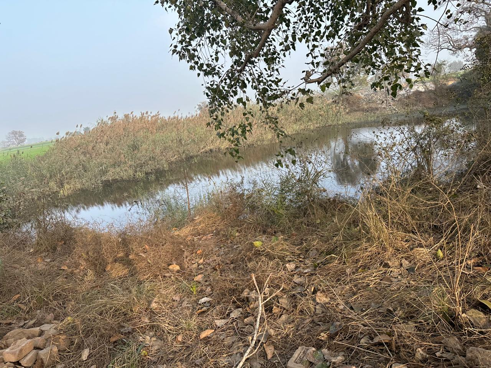
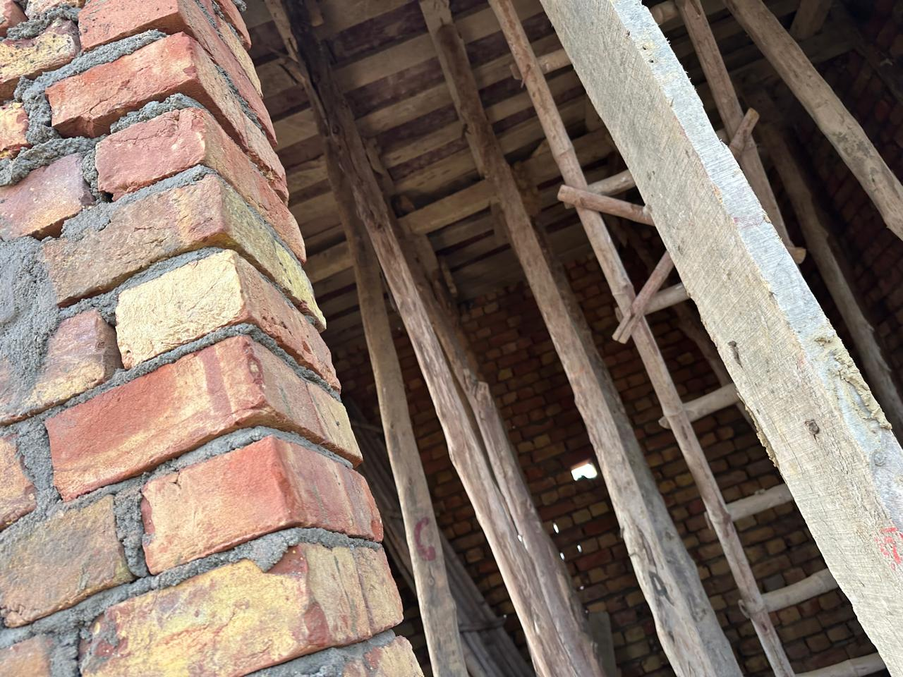

॥ श्रमेव देवः ॥ — Service is worship
From open land beside a sacred sarovar to a home for Lord Shiva — the journey of faith, seva and shraddha that raised Shri Pashupatinath Dham, Hassangarh.
Every brick of Shri Pashupatinath Dham was laid through the devotion and seva of the Saini family and fellow devotees. These photographs capture the dham as it rose — humble, honest and blessed — on the sacred soil of Hassangarh.


A serene plot beside a natural sarovar (pond) at Hassangarh was chosen and consecrated as the abode of Bhagwan Pashupatinath.
The garbhagriha (sanctum) was raised course by course in brick, supported by traditional timber scaffolding — every hand an offering of seva.
The conical shikhara was built over the sanctum, giving the dham its sacred silhouette against the grove of trees.
The heart of the dham: a Shivling brought from the holy Pashupatinath Mandir of Kathmandu, Nepal, was installed and worshipped, awakening the shrine.
Photographs from the building of Shri Pashupatinath Dham. Tap any image to view.